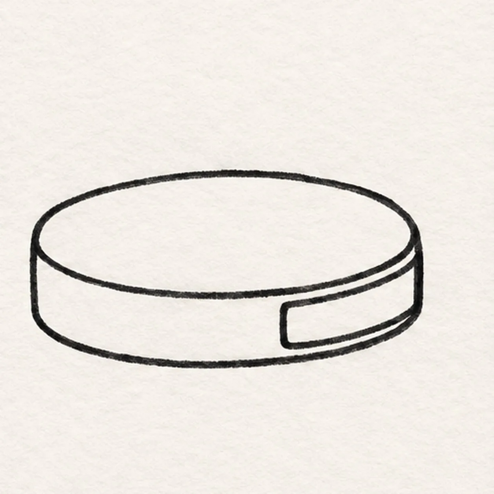
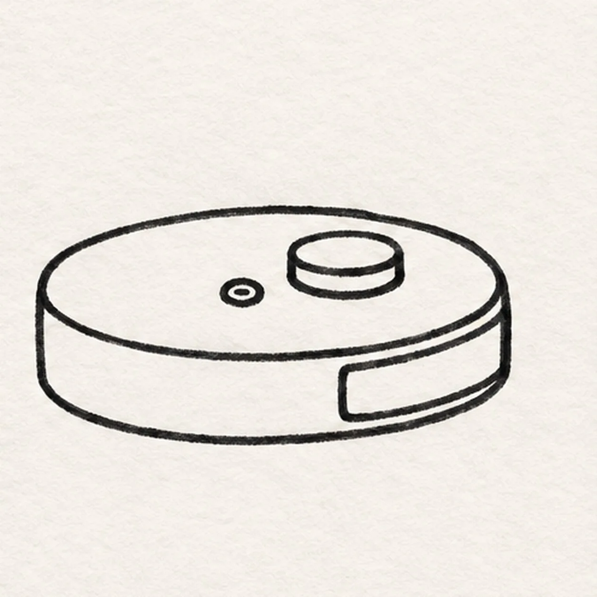
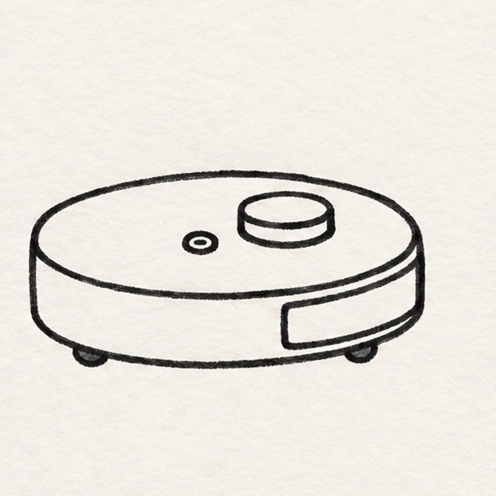
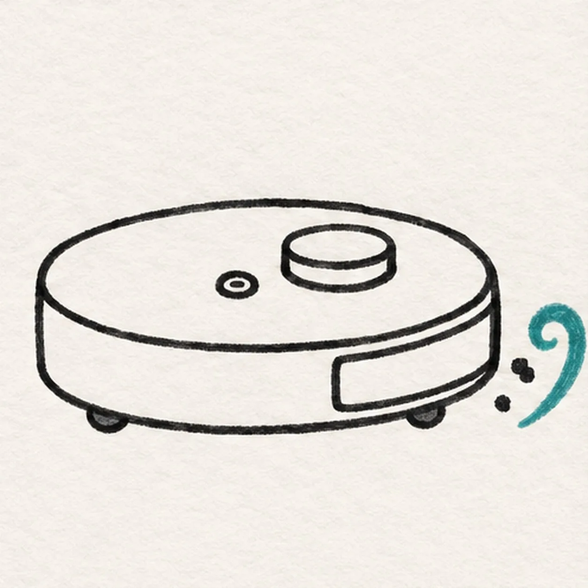
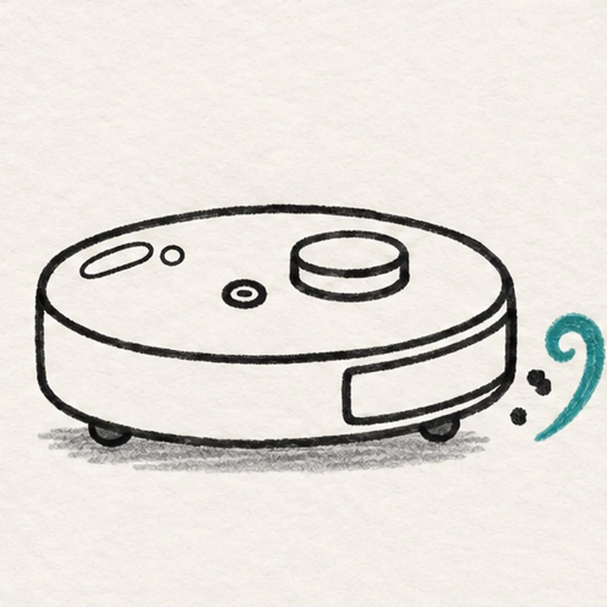

Marker ready?
Let's draw a robot vacuum
Treat this as one playful practice round: sketch the idea loosely, simplify the shapes, then commit with confident marker outlines and bright fills.
-
01

Shape the vacuum
Draw one wide shallow oval for the vacuum body, then attach a curved bumper band along its front-right lower edge. Keep the band inside the body width.
Marker tip: Ghost the long oval twice before touching the felt tip down, then leave the right side broad enough for the bumper.
-
02

Place the controls
Set a small round sensor slightly behind the front edge of the housing and a smaller power button to its left. Leave clear space between them.
Marker tip: Keep the sensor separate from the outer shell edge so it reads as a raised disc.
-
03

Set the wheels
Tuck one short wheel tab under the left lower edge and one under the right lower edge. Keep both mostly hidden beneath the housing.
Marker tip: Check that both tabs peek below the body without turning into large exposed wheels.
-
04

Curl the dust trail
Starting just right of the bumper, sweep a loose open teal curl outward, leaving its center white. Place exactly two black dust marks in the gap: one paired blot and one single dot.
Marker tip: Keep the curl open and count the paired blot as one mark plus one separate dot, not a trail of random specks.
-
05

Reserve shine and shadow
Mark two short shine gaps on the upper shell. Below the two wheel tabs, lay one broken shadow that stays narrower than the body.
Marker tip: Draw the shine boundaries inside the shell and leave them white; keep the shadow lighter than the wheels.
-
06
Color the cleaning run
Fill the existing housing coral, bumper deep navy, sensor and power button golden yellow, dust curl teal, and shadow pale gray. Reinforce only established black contours and preserve the two shine gaps.
Marker tip: Fill from the outer edge inward so the marker streaks follow the oval. Stop before the red becomes a smooth digital block.